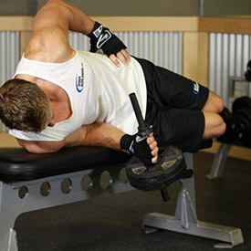

<!DOCTYPE html PUBLIC "-//W3C//DTD XHTML 1.0 Strict//EN" "http://www.w3.org/TR/xhtml1/DTD/xhtml1-strict.dtd">
<!--
Design by Free CSS Templates
http://www.freecsstemplates.org
Released for free under a Creative Commons Attribution 2.5 License

Name       : Open-Air
Description: A two-column, fixed-width design with dark color scheme.
Version    : 1.0
Released   : 20120818

-->
<html xmlns="http://www.w3.org/1999/xhtml"/>
<?php
session_start();
include('mygymdbConnect.php');
include('SignUp.php');
?>
<html>
    <head>
        <title> MyGym</title>
        <div style="position :absolute;top:20px;left:40px">
            <p><h2>MY<br/> 
                    GYM 
                    <br/></h2></p></div>
        <div style="position: absolute ;left:  200px; top: 20px;"> </div>
        <div style="position:absolute;top:37%;left:35%"/>
        <link href="http://fonts.googleapis.com/css?family=Oswald:400,300" rel="stylesheet" type="text/css" />         

        <link href="style.css" rel="stylesheet" type="text/css" media="screen" />
        <a href="home.php" style="text-decoration: none;color: black;font:serif;font-weight: bold;  ">Home |</a>
        <a href="About.html" style="text-decoration: none;color: black;font:serif;font-weight: bold;  ">About |</a>
        <a href="sign up.html" style="text-decoration: none;color: black;font:serif;font-weight: bold;  ">Sign up |</a>
        <a href="Activities.html" style="text-decoration: none;color: black;font:serif;font-weight: bold;  ">Activities |</a>
        <a href="Trainers.html" style="text-decoration: none;color: black;font:serif;font-weight: bold;  ">Trainers |</a>
        <a href="classes.html" style="text-decoration: none;color: black;font:serif;font-weight: bold;  ">Classes |</a>
        <a href="Training.html" style="text-decoration: none;color: black;font:serif;font-weight: bold;  ">Train |</a>   

    </head>

    <body>
        <div style="position: absolute;left: -300px">
            <table  cellpadding="10" cellspacing="10" height="400px" width="1200px">
                <tr><td></img></td>
                    <td><b>Description</b><br></br>Pronation and supination are a paired set of joint manipulations that, while not unique to humans, gives us a greater degree of dexterity and flexibility. This ability is found in both the hands and feet and to a lesser extent in other joints.
                        </table></div>
                        <div style="position: absolute;left: -200px;top: 500px" >
                            <table border="2"  cellpadding="10" cellspacing="10" align="center">
                                <tr><td><b>EXERCISES</b></td></tr>
                                <tr><td></img></br>
                                        </img>
                                        </img></br>
                                    </td>
                                    <td><b>Bottoms-Up Clean From The Hang Position</b>
                                        </br>1-Initiate the exercise by standing upright with a kettlebell in one hand.
                                        </br>2-Swing the kettlebell back forcefully and then reverse the motion forcefully. Crush the kettlebell handle as hard as possible and raise the kettlebell to your shoulder.
                                    </td>
                                </tr>
                                <tr><td></img></br>
                                        </img></td>
                                    <td><b>Dumbbell Lying Supination</b>
                                        </br>1-Lie sideways on a flat bench with one arm holding a dumbbell and the other hand on top of the bench folded so that you can rest your head on it.
                                        </br>2-Bend the elbows of the arm holding the dumbbell so that it creates a 90-degree angle between the upper arm and the forearm.
                                        </br>3-Now raise the upper arm so that the forearm is parallel to the floor and perpendicular to your torso (Tip: So the forearm will be directly in front of you). The upper arm will be stationary by your torso and should be parallel to the floor (aligned with your torso at all times). This will be your starting position.
                                        </br>4-As you breathe out, externally rotate your forearm so that the dumbbell is lifted up in a semicircle motion as you maintain the 90 degree angle bend between the upper arms and the forearm. You will continue this external rotation until the forearm is perpendicular to the floor and the torso pointing towards the ceiling. At this point you will hold the contraction for a second.
                                        </br>5-As you breathe in, slowly go back to the starting position.

                                    </td>
                                </tr>
                                <tr><td></img></br>
                                        </img></td>
                                    <td><b>Kneeling Forearm Stretch</b>
                                        </br>1-Start by kneeling on a mat with your palms flat and your fingers pointing back toward your knees.
                                        </br>2-Slowly lean back keeping your palms flat on the floor until you feel a stretch in your wrists and forearms. Hold for 20-30 seconds.
                                    </td>
                                </tr>
                                <tr><td></img><br></br>
                                        </img>  </td>
                                    <td><b>Palms-Up Dumbbell Wrist Curl Over A Bench</b>
                                        </br>1-Start out by placing two dumbbells on one side of a flat bench.
                                        </br>2-Kneel down on both of your knees so that your body is facing the flat bench.
                                        </br>3-Use your arms to grab both of the dumbbells with a supinated grip (palms up) and bring them up so that your forearms are resting against the flat bench. Your wrists should be hanging over the edge.
                                        </br>4-Start out by curling your wrist upwards and exhaling.
                                        </br>5-Slowly lower your wrists back down to the starting position while inhaling. Make sure to inhale during this part of the exercise.
                                        </br>6-Your forearms should be stationary as your wrist is the only movement needed to perform this exercise.

                                </tr>
                            </table>
                        </div>
                        </body>
                        </html>